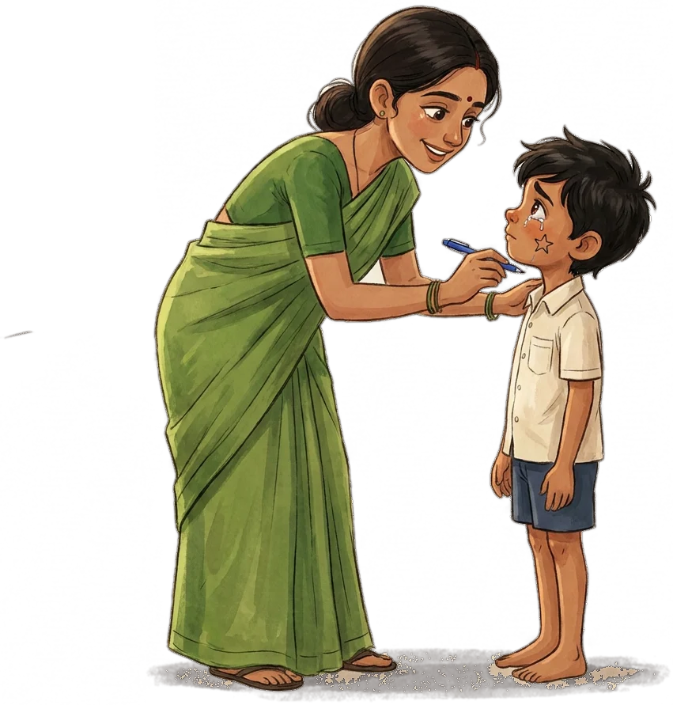
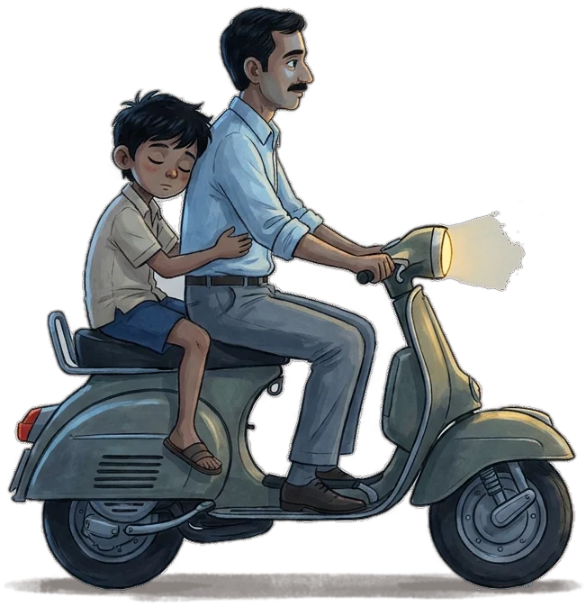
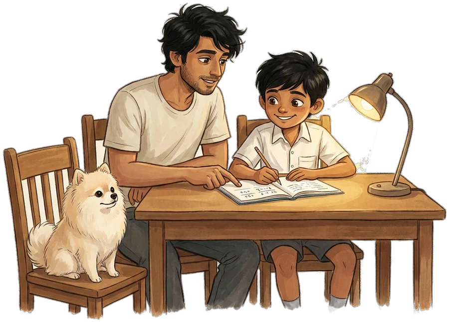

Microsoft
Software Engineer II, building cloud infrastructure at scale.
Shashank Mishra. Engineer of systems that are not allowed to fall.
Software Engineer II at Microsoft. Before that, AWS, Razorpay and Publicis Sapient.
A story about a star drawn on a cheek, and everyone who kept the kite flying.
scroll, and the wind picks up ↓
Every day, his father worked so his son could study.
“Just follow your heart and keep smiling.”
Kokiri · Kiki's Delivery Service (1989)
My father had a degree in mathematics and once dreamed of becoming an engineer. Money and circumstance held him back. Instead, he caught the 4 a.m. train to work in nearby cities, and once rode his scooter with a broken leg to teach his tuition class, still smiling.
When I cleared the entrance exam for the best school in the city, one of only two students from my school to get in, he came home with a big box of chocolates. Against family pressure, he paid more than a quarter of his monthly salary to send me there. He never once reminded me of that sacrifice.
In sixth grade I became his tech support: Excel expense sheets, his first ATM card, his first smartphone, then WhatsApp. To him it felt like magic. For me, it was where my joy of teaching began.
I drew gods: Saraswati with her veena, Krishna with his flute. After I won my class drawing competition, the principal asked what I wanted to become. I said, “M.F. Husain.” The class burst out laughing, and I started to cry. My class teacher called me aside, drew a little star on my cheek with her pen, and said:
“Always believe in your dreams.”
I kept entering every drawing competition at that school, as a quiet act of self-belief. Maths came naturally too; I filled whole registers with solutions. Then I fell short of the IIT cut-off. I took a drop year, solved Irodov and old Olympiad problems for the joy of it, and got into BITS Pilani's Goa campus.
Pokémon at 5 p.m. as a kid. Taylor Swift's “Change” on wired earphones every day of the drop year.

One day, the boy took his first flight.
“We each need to find our own inspiration, Kiki. Sometimes it's not easy.”
Ursula · Kiki's Delivery Service (1989)
My first flight, Delhi to Goa. College was paid for with an education loan, and I was the first in my family to study outside our city.
The rank list made me a chemical engineer. My curiosity went further: graph theory, astrophysics, relativity. After repeated requests, my relativity professor let me skip Quantum Mechanics I and II to join an advanced quantum computing course meant mostly for master's students. I ran small quantum circuits on a real IBM quantum computer from my hostel room.
The machine learning course was open only to computer science and electrical students. I asked the head of the CS department to open it to everyone. Then I asked again the next semester, and the one after. It opened to every branch, and has stayed open since.
Nights went to the competitive coding club our batch started in first year: CodeChef 5★, global rank 150, Google Code Jam Round 2. Then a summer internship in face recognition at Publicis Sapient, which ended in a job offer.
But then, the wind changed.
“Why must fireflies die so young?”
Setsuko · Grave of the Fireflies (1988)
In my final year I was working on a project for a space-tech startup and planning a research internship in quantum computing. Midway through that semester, my father passed away.
Overnight, I became the family's breadwinner: an education loan, a house loan, and a brother eleven years younger. It was the peak of COVID. I set the research aside and took a six-month internship at Goldman Sachs, because its stipend could support us. It ended in a job offer too. Later I chose a stable software job over research or a deep-tech startup.
It was necessity, not preference. But he had already shown me how to carry it: strength isn't avoiding struggle; it's carrying it with grace.
On the rides back from our village, I would fall asleep on the back of his bike, knowing I was safe with him.

Because of that, he learned to fly the big machines.
“Airplanes are beautiful dreams. Engineers turn dreams into reality.”
Caproni · The Wind Rises (2013)
A chemical engineer moving into software has to earn every step. One project led to an internship, then another. Along the way I settled on three rules: design for failure, measure before optimizing, scale deliberately.
Software Engineer II, building cloud infrastructure at scale.
A peer referred me to the team building OpenSearch Serverless, a brand-new AWS service. I worked on the indexing write path and built the Index Rollover API that lets ingestion scale automatically. Before launch, I noticed the system called the metadata service once per shard instead of batching. Fixing it meant a week's delay before a hard deadline. My manager was unsure, so I took it to the Principal Engineer, who approved it.
After launch, my manager moved to another team and asked me to come along. It could have fast-tracked my promotion. I stayed with a five-person team to stabilise what we had launched. After a quarter of on-call rotations and fixes, availability in major US regions rose from dips as low as 40% to over 90%. The promotion came a few quarters later, backed by a Principal Engineer.
One evening while I was on leave, my manager called: a junior engineer was stuck, and a regional launch was due the next working day. I traced a stuck disk creation to a network issue, and with the network team's on-call engineer we fixed it past midnight. The launch went ahead on time.
Also in the log: a cost anomaly fixed that cut customer billing by $8.7M, a $2M/month customer onboarded, 300+ code reviews, and an intern I mentored who recovered from an accidental push to the main branch and earned a full-time offer.
I wanted to feel how fast a startup moves. I launched Advance Tax Payments in three months to meet a quarterly tax deadline; it processed ₹6.4 Cr in its first month. I owned the payout-links service and fixed a state-inconsistency bug that could have cost ₹4 Cr.
My first full-time role, offered after my internship there, where I had won the Learning Mindset award. I built a GraphQL layer that made a financial-wellness platform more responsive.
Because of that, he started building his own.
“A pig's gotta fly.”
Porco · Porco Rosso (1992)
The hangar light stays on late. These are tools I build in my own time. All open source.
Lets your AI assistant read your WHOOP recovery, sleep and strain. Read-only, your tokens stay on your machine, and you're compared against your own baseline, not a population average.
7,946 downloads · 166 stars · 16 toolsopen blueprint →A staff engineer in a box: 685 backend and distributed-systems concepts across 35 domains, each with a source, searchable by Claude, Cursor or Copilot before they design.
685 concepts · 35 domains · 652 testsopen blueprint →Tells you which local AI models your machine can actually run before you download them: yes, slow or no, with estimated tokens per second. The advice never touches the network.
69 models · 4 runtimes · 0 network callsopen blueprint →Until finally, he was the one drawing the stars.
“We can fly with our spirit.”
Kiki · Kiki's Delivery Service (1989)
That star has long faded from my cheek, but its lesson hasn't: the right encouragement at the right moment can rewrite someone's future.
A friend from my internship had a job offer but wanted something better, and was afraid to let it go. I reminded him every day what he was capable of. He turned the offer down and got Uber on day one of campus placements.
My younger brother had been barely passing for years, sometimes on grace marks. We studied together, focusing on steady improvement rather than grades. He passed tenth grade with 87%.
Since 2021 I've given free one-on-one calls to university students finding their way into software, and I write on LinkedIn about non-linear careers.
And I've gone back to my first love. On Ask Euler I take one Project Euler problem at a time, show the naive approach, then the trick that makes it run instantly. The boy who filled registers with maths now teaches it.

And every day since, the wind keeps rising.
“Le vent se lève! … il faut tenter de vivre.”
Paul Valéry, 1920 · the line that opens The Wind Rises (2013) · “The wind is rising; we must try to live.”
The boy the class laughed at now builds systems other people rely on, and tells students their dreams aren't silly either. The star faded. The kite is still up.
When life feels overwhelming, I go to Rameshwaram and spend hours in Dr. Kalam's childhood home, now a museum. He grew up on that small island and read more than a thousand books. Then I come back and build the next thing.
My grandmother's rule still guides me: win one day at a time.
Still on the list: an Ironman, a week of books and cafés in Edinburgh, whales in Antarctica, and time to sketch again, just for love.